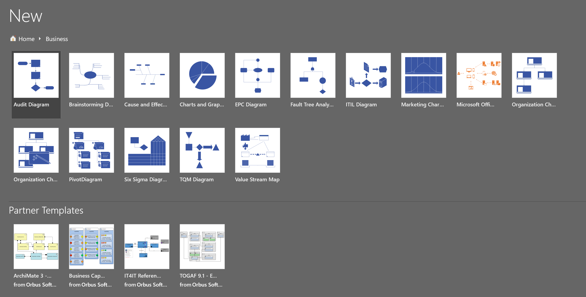
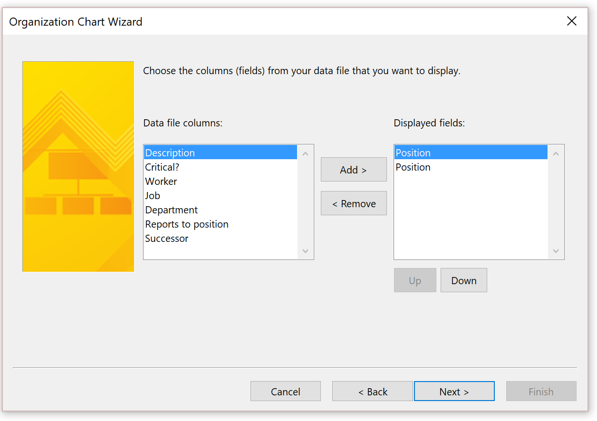
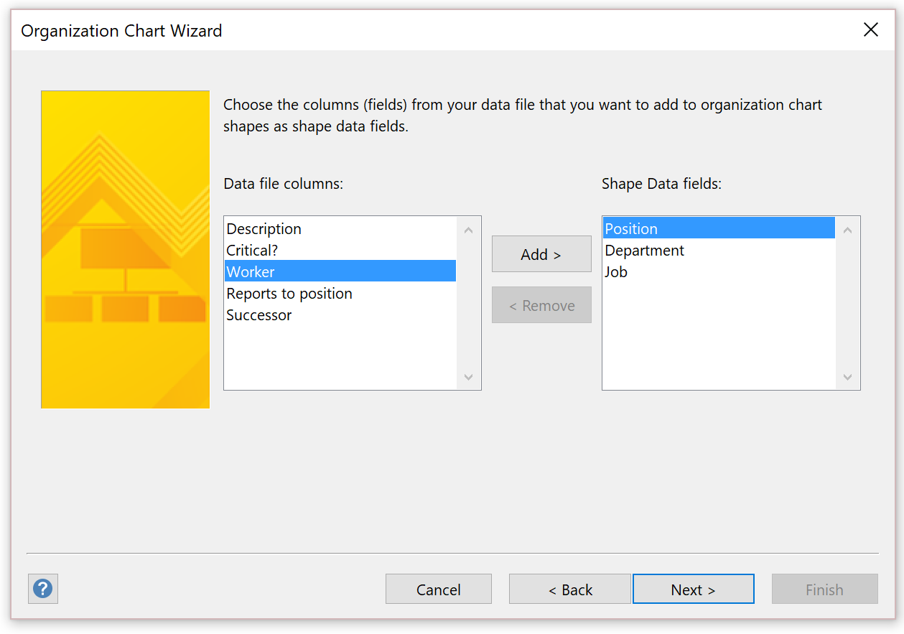

Vermeiden Sie das Abschneiden von Text in der Positionshierarchie und beim Export nach Visio
Abgang
Wenn ein Kunde die Positionshierarchie in Microsoft Dynamics 365 Human Resources anzeigt, werden die Namen von Einzelpersonen und Positionen abgeschnitten. Daher kann es schwierig sein, ein Screenshot zu erstellen oder die Hierarchie zu drucken oder zu verteilen.

Ursache
Dieses Verhalten ist beabsichtigt.
Auflösung
Leider können Benutzer die Größe des Texts nicht einfach ändern. Sie können jedoch die Positionshierarchie von Human Resources heraus exportieren und sie dann in Microsoft Visio importieren. Obwohl der folgende Artikel für Microsoft Dynamics AX 2012 verfasst wurde, gilt der Prozess nach wie vor für Human Resources: Exportieren einer Positionshierarchie nach Microsoft Visio.
Gehen Sie folgendermaßen vor beim Export nach Visio.
Öffnen Sie in Human Resources die Listenseite Positionen.
Um weitere Informationen im Organisationsstrukturdiagramm einzubeziehen, fügen Sie der Liste Positionen Felder hinzu, damit sie verfügbar sind, wenn Sie den Assistenten später in dieser Prozedur verwenden.
Wählen Sie im Aktionsbereich die Schaltfläche In Microsoft Office öffnen aus, und wählen Sie dann unter Nach Excel exportieren die Option Positionen aus. Alternativ drücken Sie STRG+T.

Speichern Sie die Excel-Datei, die exportiert wurde.

Wählen Sie in Visio Visio – Neue erstellen und wählen Sie die Vorlagenkategorie Unternehmen aus.

Wählen Sie Organigramm-Assistent und dann Erstellen aus.

Wählen Sie Informationen, die bereits in einer Datei oder Datenbank gespeichert sind aus, und wählen Sie dann Weiter aus.

Wählen Sie Ein Text, Organisation Plus (*.txt) oder Excel-Datei aus, und wählen Sie dann Weiter aus.

Navigieren Sie zur Auswahl der exportierten Excel-Datei, die die Positionshierarchie enthält, und wählen Sie dann Weiter aus.

Legen Sie das Feld Name auf Position fest, legen Sie das Feld Vorgesetzter auf Position des Vorgesetzten fest, und wählen Sie dann Weiter aus.

Wählen Sie die Felder aus, die in jedem Knoten angezeigt werden sollen, und wählen Sie dann Weiter aus.

Fügen Sie die Spalte Position der Liste Formdatenfelder hinzu, und wählen Sie dann Weiter aus.

Bilder sind aktuell nicht vorhanden. Daher wählen Sie auf der nächsten Seite Weiter aus.
Wählen Sie Ich möchte, dass der Assistent mein Organigramm über mehrere Seiten hinweg darstellt aus.

Wählen Sie Fertig stellen aus.
Wenn es Positionen gibt, die sich nicht in der Struktur befinden, werden Sie dazu aufgefordert, sie im Diagramm einzuschließen.
Das in Visio generierte Diagramm zeigt jeden Manager auf einem getrennten Arbeitsblatt an.
Anhand der Felder, die Sie ausgewählt haben, um sie ins Diagramm einzubeziehen, zeigt jeder Knoten die entsprechenden Informationen an, wenn die Visio-Datei generiert wird.

Zusätzliche Option
In Human Resources sind Sie möglicherweise auch in der Lage, den Arbeitsbereich Personen zu verwenden, um der Hierarchie zugehörige Informationen anzuzeigen.